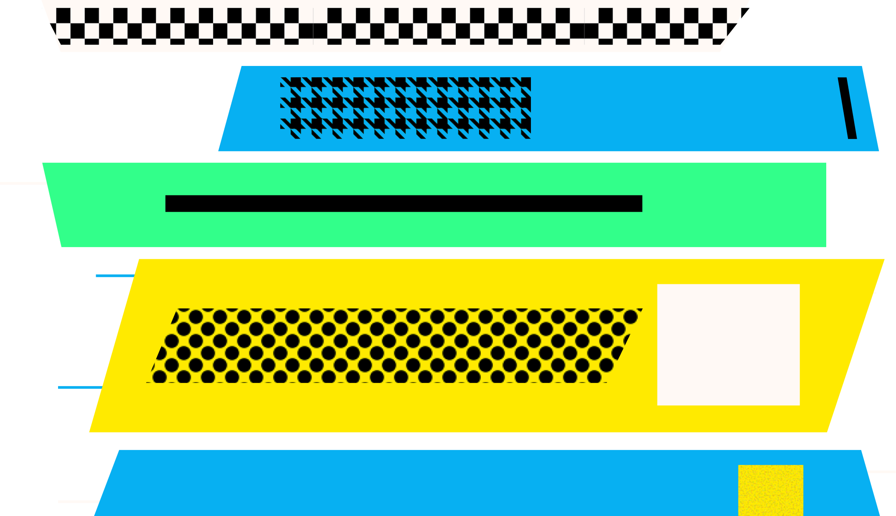
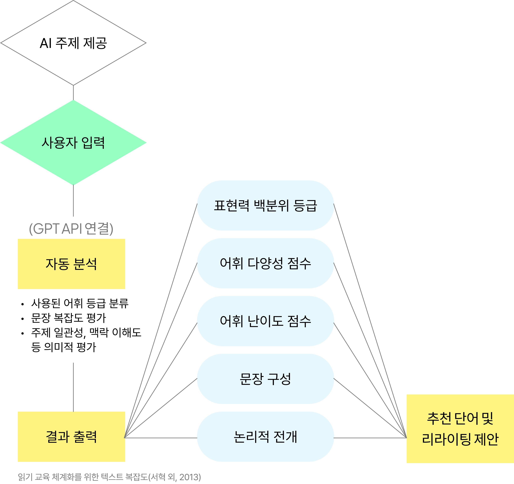
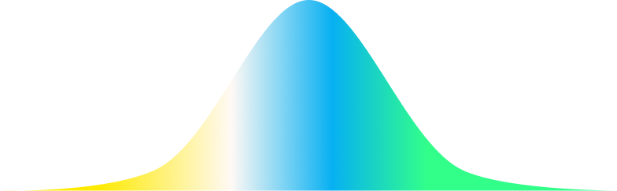
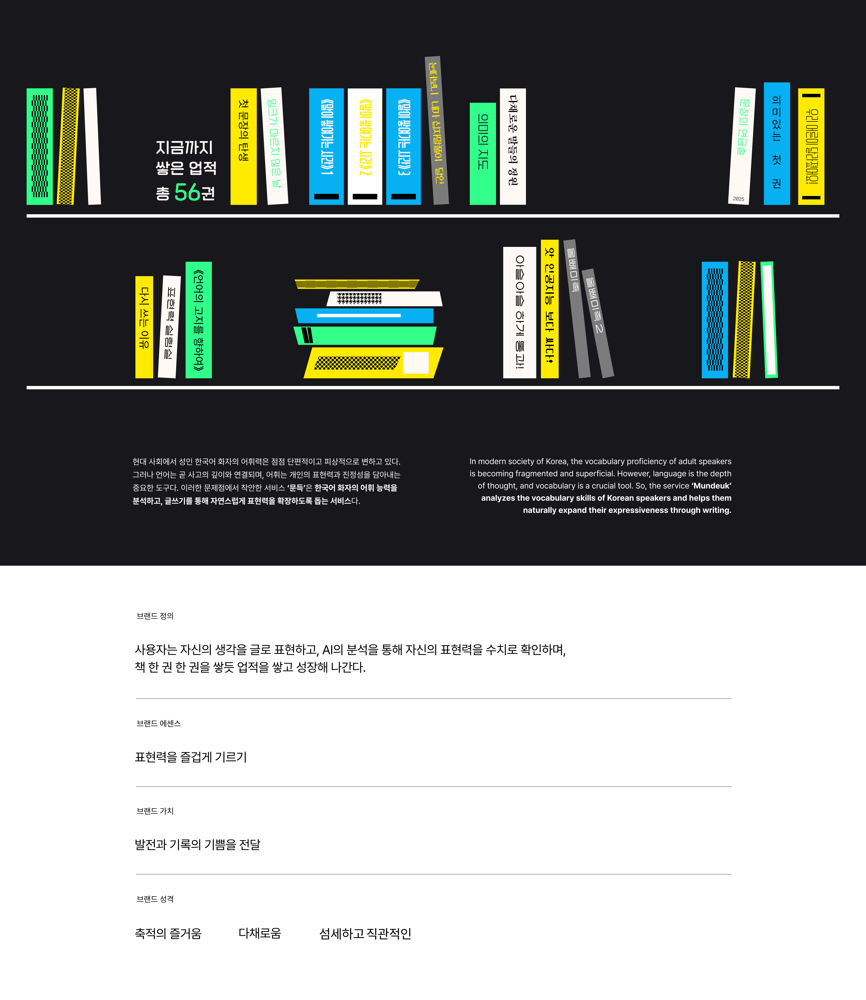
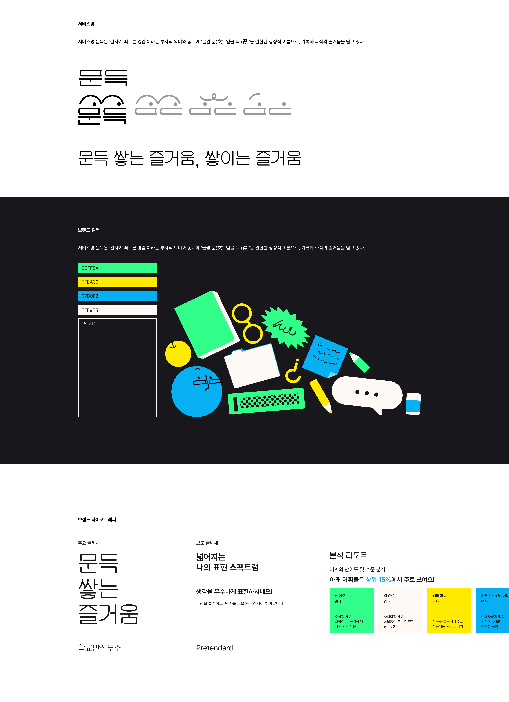
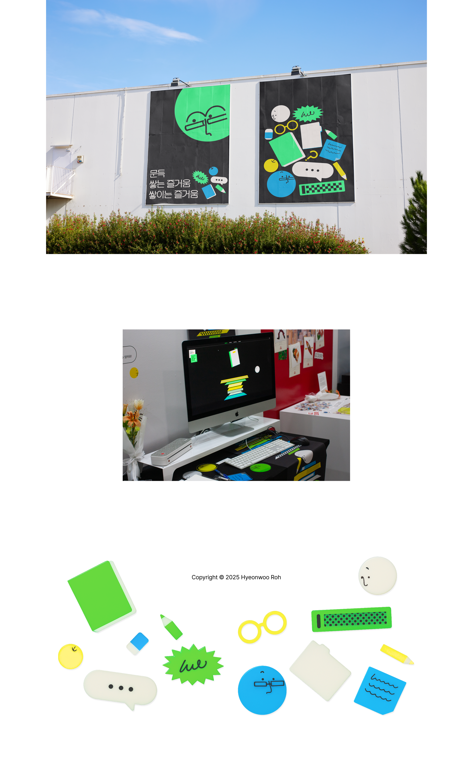
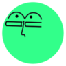

오은하, 편지윤, 서혁. 2023. "성인의 어휘 능력 조사 결과 분석-어휘 등급과 응답자 수준 비교를 중심으로" 『국어교육연구』 (제83집)
어휘력은 사고력, 표현력, 커뮤니케이션 역량의 기초 자산
그러나 기존 어휘 학습의 한계 명확
현재 대부분의 어휘 학습은
'문제 풀이', '낱말-의미 연결' 중심
→ 어휘력 및 표현력을 기르기 어려움
성인이 아닌
유소년-고등생을 타겟으로 하기 때문에
평가를 위한 공부
학습자는 "내가 잘하고 있는가?"보다
"나는 어느 정도 수준인가?"를
알고 싶어함

-추상적이던 '표현력'을 점수와 등급으로 수치화
-학습 동기 유발 → 반복 사용 → 성장 추적
-리라이팅 제안과 비교 제공 → 자연스러운 반복 학습
-어휘만 보는 것이 아니라 실제 쓰는 글을 분석
블로그 글쓰기, 자기소개서, 리포트, 이메일, 왓챠피디아 등
일상생활 속 다양한 글쓰기에 적용할 수 있다.


성취가 쌓일수록 책이 하나씩 '쌓이는' 인터랙션을 통해 학습 과정이 시각적으로 드러나게 하였다. 핵심 비주얼 키워드는 책과 쌓임이며, 사용자는 자신의 어휘적 성장을 '쌓아가는' 경험으로 체감하게 된다.




https://hwroh1.github.io/Mundeuk/